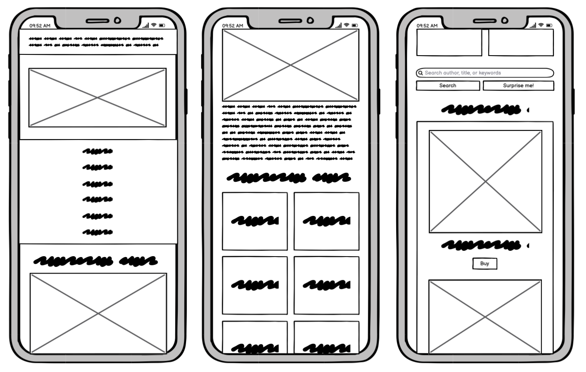

Commonwealth Books
Goal: To choose the right book!
Context
Commonwealth Books is a bookstore selling used and rare books with locations in Boston, MA and Newport, RI. I wanted to redesign the home page of Commonwealth Books' website by analyzing and identifying flaws of its existing interface, creating low-fidelity and high-fidelity prototypes for various screen sizes, and building a responsive website based on these prototypes. I chose Commonwealth Books' webpage because its interface is disorganized and cluttered in the way its content is organized, and it has recommended dimensions of 1280x1024, meaning it is not responsive to different screen sizes. The original Commonwealth Books webpage can be found here.
Objective
My ultimate aim for the website was to make it as easy as possible for users to find books, whether that was through implementing a more sophisticated search bar (and its 'Surprise Me!' button), the genre categories, or the books in the 'New This Week' sidebar. I also wanted to make it as user-friendly for seniors and tourists, who are often the ones purchasing used and rare books, while cleaning up, modernizing, and giving the webpage a red and black color scheme that matched the Black Widow Press, which Commonwealth Books is the home of.
Testing & Considerations
The current Commonwealth Books webpage has these issues, and these must be addressed and resolved in the redesign.
Usability:
- - There is no feedback when pressing or hovering over the tabs.
- - There is no 'search' button in the inventory search, meaning the user would have to know to press the 'enter' key after entering information.
- - The page is not responsive to smaller screen sizes, with the text becoming squished together and the page divisions getting cut off.
Learnability:
- - The separate page divisions do not scroll at the same time, meaning each division has to be scrolled individually.
- - Many of the navigation tabs lead to non-existing or outdated pages. The link to join the email list leads to an outdated page, and the user would have to manually send an email by exiting the page to join.
Memorability:
- - The navigation tabs are randomly ordered, meaning it is difficult to remember where a tab is to access for a specific purpose. The Black Widow Press logo and the search also break up the tabs.
- - The information on the right page division is also randomly ordered and disorganized, which makes it unmemorable and difficult to read. Differently-sized pictures also break up the lengthy information.
In terms of accessibility (which was tested using WebAIM WAVE), the webpage has either a missing or invalid language, making it difficult for assistive technology to read or automatically translate the content. The page also does not have heading structures or page regions. This can make it difficult for assistive technology to find document structure, outlines, and navigation functionality, in addition to identifying and defining different page areas. It would be harder, therefore, for technology to process and find information.
Idea #1 - Lo-Fi Prototype
Some changes I made in my first redesign are:
- - The hours are located at the top, so that users can more easily find them after they were updated due to COVID-19 restrictions.
- - The navigation tabs are now better organized and accessible at the top, all leading to existing, updated pages.
- - The description of the bookstore is shortened, making it more readable.
- - Sections for genres were added so that users can more easily find books, prints, maps, and comics they want.
- - A more modern search bar was implemented to replace the inventory search in the original webpage. This includes both a 'Search' button and a 'Surprise Me!' button that leads the user to a random book.
- - A section with new books was added to aid users in their book search and to help the store increase their book sales.
Mobile:
- - The tabs are spread out and centered so that each one is easier to tap on and access.
- - Titles, pictures, and sections are spread out and centered so that they are easier to see on a phone.
- - The search bar's buttons are spread out and centered so that they are easier to tap on.
Tablet:
- - The tabs are spread out and centered so that each one is easier to tap on and access.
- - Titles, pictures, and sections are spread out and centered so that they are easier to see on a tablet.
- - The search bar's buttons are spread out and centered so that they are easier to tap on.
Desktop:
- - The entire page scrolls, meaning each individual division doesn't need to be scrolled through.
Idea #2 - Hi-Fi Prototype
Some changes I made in my second redesign are:
- - Much of the tabs from the original site are condensed in the redesigned site.
- - 'Home' is red because the user is on the home page.
Mobile:
- - The mobile version is the only one in which the navigation menu and genre categories are organized as one column per row. This is to make it easier for mobile users to access navigation tabs and individual genre categories.
- - Elements and layout choices:
- - The navigation menu: flex-direction: column
- - Each menu tab: text-align: center
- - The body of the page: flex-direction: column-reverse, text-align: center
- - The image: max-width: 100%, height: auto
- - Genre categories: flex-direction: column
- - Each genre: flex: 33%
- - Search bar buttons: flex: 50%
Tablet:
- - The buttons are stretched in the mobile and tablet versions to make it easier for users to press them. The text is also centered.
- - Elements and layout choices:
- - The navigation menu: display: flex, justify-content: space-around, flex-wrap: wrap
- - The body of the page: flex-direction: column-reverse, text-align: center
- - Each menu tab: text-align: center
- - Genre categories: flex-direction: column
- - Each genre: flex: 33%
- - Search bar buttons: flex: 50%
- - Each book: max-width: 150px, height: auto
Desktop:
- - The desktop version is the only one with a sidebar. The mobile and tablet versions prioritize the bookstore's description then genre categories before showing the search bar and new books. This is because most users do not know exactly what books they're looking for, especially because Commonwealth Books primarily sells used and rare books.
- - Elements and layout choices:
- - The navigation menu: display: flex, justify-content: space-around, flex-wrap: wrap
- - The side bar: flex: 30%
- - Search bar buttons: display: flex, flex-direction: row
- - The main page: flex: 70%
- - The body of the page: display: flex, flex-direction: row
- - The image: max-width: 100%, height: auto
- - Each menu tab: text-align: center
- - Genre categories: display: flex, flex-direction: row
- - Each genre: flex: 33%
- - Each book: max-width: 150px, height: auto
Final Design
The redesigned website can be found here.

Final Choice
Thanks to this technology, I chose to read Frog and Toad Are Friends. Ribbit!